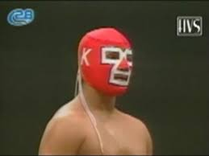

⭐ Ascenso y consagración (2004–2011)
Adoptó el nombre de Místico en 2004 y rápidamente ganó popularidad. Ganó múltiples títulos y máscaras, como la de Black Warrior en 2006.


Nombre real: Luis Ignacio Urive Alvirde
Fecha de nacimiento: 22 de diciembre de 1982
Lugar de nacimiento: Ciudad de México, México
Alias: Místico, Sin Cara, Myzteziz, Carístico
Debutó como Dr. Karonte Jr. en 1998 y más tarde como Astro Boy. Fue entrenado por Fray Tormenta, Tony Salazar y su padre, Dr. Karonte.
Adoptó el nombre de Místico en 2004 y rápidamente ganó popularidad. Ganó múltiples títulos y máscaras, como la de Black Warrior en 2006.
Debutó en WWE como Sin Cara. Luego luchó en AAA como Myzteziz, ganando la Copa Antonio Peña y la Lucha Libre World Cup.
.jpg)
.jpg)
Volvió como Carístico y en 2021 recuperó oficialmente el personaje de Místico. Hoy compite en CMLL, AEW y MLW.
Hijo de Dr. Karonte, hermano de Argos y Argenis. Ha tenido múltiples lesiones y sigue activo luchando con pasión por la lucha libre.